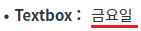
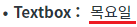
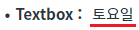
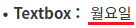
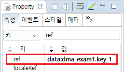

Textbox의 속성 'ref'와 함수 'setRef' 예제입니다.
속성 'ref'는 컴포넌트의 값(value)과 데이터 객체의 키 또는 컬럼의 값(value)을 연결하는 기능을 제공합니다. 데이터 객체와 연결되면 값이 동기화됩니다. 속성의 설정 값 구조는 모든 데이터 객체가 동일합니다.
함수 'setRef'는 속성 'ref'의 값을 변경하는 기능을 제공합니다.
'ref'의 설정 값이 리스트(다건)형 데이터 객체의 컬럼이라면, 데이터 객체의 선택된 행의 컬럼의 값과 연결됩니다. 대표적으로 'DataList', 'AliasDataList'가 리스트형 데이터 객체에 해당합니다. 리스트 형식의 데이터 객체에서 행을 선택하는 기능은 데이터 객체의 속성 'initRowPosition'과 함수 'setRowPosition'을 통해 제공됩니다.
DataMap의 'key'와 연결
DataList의 'column'과 연결
속성 'ref'와 데이터 객체가 연결되었을 때, 컴포넌트와 데이터 객체이 동기화되는 것을 확인하고 스크립트로 속성 'ref'가 변경되는 것을 확인합니다. 영역에 구성된 버튼을 순서에 맞게 클릭하여 Textbox에 출력된 값과 DataMap의 데이터를 확인합니다. DataMap의 데이터는 '로그 확인'의 Textarea와 브라우저 개발자 도구의 콘솔에 출력됩니다.
STEP 1. 초기 상태를 확인합니다.
예제 영역 [DataMap의 'key'와 연결]에 구성된 버튼과 Textbox를 확인합니다.
속성 'ref'를 통해 Textbox의 값과 DataMap 'dma_exam1'의 키 'key_1'이 연결된 상태로, Textbox에 '금요일'이 출력됩니다.
영역의 하단에 구성된 Textarea에는 DataMap의 데이터가 출력되어 있습니다.그림 1.브라우저(Chrome) 실행 예시

로그
[05:21:54] # DataMap "dma_exam1"의 JSON 형식의 데이터
{
"key_1": "금요일",
"key_2": "월요일"
}STEP 2. 연결된 DataMap의 값 변경하기
버튼 1-1 DataMap 'dma_exam1'의 키 'key_1'의 값을 '목요일'로 변경하기를 클릭합니다.STEP 3. 실행된 결과를 확인합니다.
DataMap 'dma_exam1'의 키 'key_1'의 값과 Textbox의 문자열이 '목요일'로 변경됩니다.
그림 2.브라우저(Chrome) 실행 예시

로그
[05:22:09] 스크립트 실행 : dma_exam1.set("key_1", "목요일");
[05:22:09] # DataMap "dma_exam1"의 JSON 형식의 데이터{
"key_1": "목요일",
"key_2": "월요일"
}STEP 4. Textbox의 값 변경하기
버튼 1-2 Textbox의 값을 '토요일'로 변경하기를 클릭합니다.STEP 5. 실행된 결과를 확인합니다.
Textbox의 입력 필드의 문자열과 DataMap 'dma_exam1'의 키 'key_1'의 값이 '토요일'로 변경됩니다.
그림 3.브라우저(Chrome) 실행 예시

로그
[05:24:09] 스크립트 실행 : tbx_exam1.setValue("토요일");
[05:24:09] # DataMap "dma_exam1"의 JSON 형식의 데이터
{
"key_1": "토요일",
"key_2": "월요일"
}STEP 6. 스크립트로 Textbox의 속성 'ref' 변경하기
버튼 1-3 속성 'ref'를 DataMap 'dma_exam1'의 키 'key_2'로 변경하기를 클릭합니다.STEP 7. 실행된 결과를 확인합니다.
Textbox의 값과 DataMap 'dma_exam1'의 키 'key_2'가 연결됩니다. Textbox의 문자열이 '월요일'로 변경됩니다.
그림 4.브라우저(Chrome) 실행 예시

로그
[05:25:13] 스크립트 실행 : tbx_exam1.setRef("data:dma_exam1.key_2");
[05:25:13] # DataMap "dma_exam1"의 JSON 형식의 데이터
{
"key_1": "토요일",
"key_2": "월요일"
}속성 'ref'와 데이터 객체가 연결되었을 때, 컴포넌트와 데이터 객체이 동기화되는 것을 확인하고 스크립트로 속성 'ref'가 변경되는 것을 확인합니다. 영역에 구성된 버튼을 순서에 맞게 클릭하여 Textbox에 출력된 값과 DataList의 데이터를 확인합니다. DataList의 데이터는 '로그 확인'의 Textarea와 브라우저 개발자 도구의 콘솔에 출력됩니다.
STEP 1. 초기 상태를 확인합니다.
예제 영역 [DataList의 'column'과 연결]에 구성된 버튼과 Textbox를 확인합니다.
DataList 'dlt_exam1'의 속성 'initRowPosition'이 '0'으로 설정되어 첫 번째 로우가 선택된 상태입니다.
속성 'ref'를 통해 Textbox의 값과 DataList 'dlt_exam1'의 첫 번째 로우의 컬럼 'col_1'이 연결되어, Textbox에 '금요일'이 출력됩니다.
영역의 하단에 구성된 Textarea에는 DataList의 데이터가 출력되어 있습니다.그림 5.브라우저(Chrome) 실행 예시
로그
[05:21:54] # DataList "dlt_exam1"의 JSON 형식의 데이터
[
{
"col_1": "금요일",
"col_2": "월요일",
"rowStatus": "R"
},
{
"col_1": "화요일",
"col_2": "일요일",
"rowStatus": "R"
}
]STEP 2. 연결된 DataList의 값 변경하기
버튼 2-1 DataList 'dlt_exam1'의 첫 번째 로우의 컬럼 'col_1'의 값을 '목요일'로 변경하기를 클릭합니다.STEP 3. 실행된 결과를 확인합니다.
DataList 'dlt_exam1'의 첫 번째 로우의 컬럼 'col_1'의 값과 Textbox의 문자열이 '목요일'로 변경됩니다.
그림 6.브라우저(Chrome) 실행 예시
로그
[05:26:24] 스크립트 실행 : dlt_exam1.setCellData(0, "col_1", "목요일");
[05:26:24] # DataList "dlt_exam1"의 JSON 형식의 데이터
[
{
"col_1": "목요일",
"col_2": "월요일",
"rowStatus": "U"
},
{
"col_1": "화요일",
"col_2": "일요일",
"rowStatus": "R"
}
]STEP 4. Textbox의 값 변경하기
버튼 2-2 Textbox의 값을 '토요일'로 변경하기를 클릭합니다.STEP 5. 실행된 결과를 확인합니다.
Textbox의 입력 필드의 문자열과 첫 번째 로우의 컬럼 'col_1'의 값이 '토요일'로 변경됩니다.
그림 7.브라우저(Chrome) 실행 예시
로그
[05:26:44] 스크립트 실행 : tbx_exam2.setValue("토요일");
[05:26:44] # DataList "dlt_exam1"의 JSON 형식의 데이터
[
{
"col_1": "토요일",
"col_2": "월요일",
"rowStatus": "U"
},
{
"col_1": "화요일",
"col_2": "일요일",
"rowStatus": "R"
}
]STEP 6. 스크립트로 Textbox의 속성 'ref' 변경하기
버튼 2-3 속성 'ref'를 DataList 'dlt_exam1'의 첫 번째 로우의 컬럼 'col_2'로 변경하기를 클릭합니다.STEP 7. 실행된 결과를 확인합니다.
Textbox의 값과 DataList 'dlt_exam1'의 첫 번째 로우의 컬럼 'col_2'가 연결됩니다. Textbox의 문자열이 '월요일'로 변경됩니다.
그림 8.브라우저(Chrome) 실행 예시
로그
[05:27:28] 스크립트 실행 : tbx_exam2.setRef("data:dlt_exam1.col_2");
[05:27:28] # DataList "dlt_exam1"의 JSON 형식의 데이터
[
{
"col_1": "토요일",
"col_2": "월요일",
"rowStatus": "U"
},
{
"col_1": "화요일",
"col_2": "일요일",
"rowStatus": "R"
}
]Textbox의 속성을 정의합니다.
[필수] ref="data:[데이터 객체 id].[key 또는 column의 id]"
(주의 사항)
설정 값의 'data:'은 고정 값입니다.
(예시)
예시 1) DataMap 'dma_exam1'의 키 'key_1'과 연결
ref="data:dma_exam1.key_1"
예시 2) DataList 'dlt_exam1'의 키 'col_1'과 연결
ref="data:dlt_exam1.col_1"
그림 9.웹스퀘어5 SP5 스튜디오의 Property View(속성창) 예시

소스 코드
<!-- Textbox 의 소스 본문 예시 --> <w2:textbox ref="data:dma_exam1.key_1"></w2:textbox>
스크립트를 작성합니다.
Textbox의 함수 'setRef'를 이용하여 스크립트를 작성합니다. 세부 지정은 아래의 스크립트 예시에 작성되어 있습니다.
스크립트
//예제 파일에서는 스크립트 'scwin.btn_exam1_3_onclick'에 작성되어 있습니다. // Textbox 'tbx_exam1'의 속성 'ref'의 설정 값을 DataMap 'dma_exam1'의 키 'key_2'로 변경합니다. // 설정 값의 'data:'는 고정 값입니다. tbx_exam1.setRef("data:dma_exam1.key_2");
ref
setRef
[웹스퀘어5 SP5 개발 가이드] TextBox
링크 : https://docs1.inswave.com/sp5_user_guide/8df43d1f59fab704#b03eab79a0d8f148